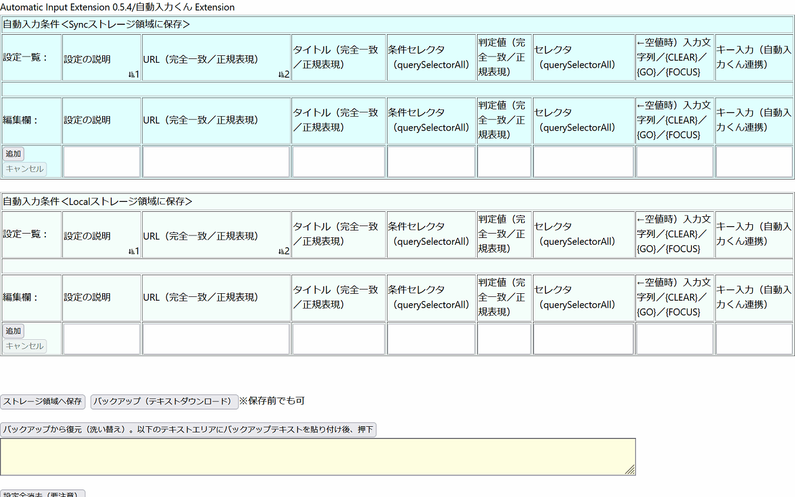

[タイトル]の説明
入力処理を実施する際の条件判定を行います [タイトル]に指定がある場合のみ判定します [タイトル]がdocument.titleと一致する場合のみ、入力処理を行います
[条件セレクタ]と[判定値]の説明
入力処理を実施する際の条件判定を行います
[条件セレクタ]に指定がある場合のみ判定します
querySelectorAll([条件セレクタ])で取得できたエレメントのvalue値、checked値もしくはtextContent値が[判定値]と一致する場合のみ、入力処理を行います
[条件セレクタ]の探索はページのdocumentおよびdocument.querySelectorAll('frame, iframe')で取得できたすべての.contentDocumentに対して行われます。ただし、[条件セレクタ]が取得できた最初のdocumentのみが対象となります※取得できた最初のdocument以外にも[条件セレクタ]が含まれる場合、それらは対象になりません
[セレクタ]と[入力文字列]の説明
[セレクタ]が空で[入力文字列]が「{css XYZ}」に該当する場合、
[URL]に一致するページヘッダにCSSとしてXYZを挿入します
例えば、[URL]にamazon prime、[入力文字列]に「{css .vsc-controller {height: unset !important;}}」とすると、vsc-controllerを使ってても画面が観れるようになります
[セレクタ]が空以外の場合、
querySelectorAll([セレクタ])で取得できたエレメントに対して、入力処理を行います
[セレクタ]の探索はページのdocumentおよびdocument.querySelectorAll('frame, iframe')で取得できたすべての.contentDocumentに対して行われます。ただし、[セレクタ]が取得できた最初のdocumentのみが対象となります※取得できた最初のdocument以外にも[セレクタ]が含まれる場合、それらは対象になりません
querySelectorAll([セレクタ])で取得できたエレメントがinput/TextAreaタグでタイプがcheckbox/radioの場合、.focus()の実行と[入力文字列]にtrue/falseがあれば.checkedに代入します
querySelectorAll([セレクタ])で取得できたエレメントがinput/TextAreaタグでタイプがcheckbox/radio以外の場合、.value値が空白であれば.focus()の実行と.valueに[入力文字列]を代入します
querySelectorAll([セレクタ])で取得できたエレメントがaタグの場合、[入力文字列]に{go}/{click}/{open}があれば.focus()の実行と.hrefに遷移します
[入力文字列]に{focus}があれば、querySelectorAll([セレクタ])で取得できたエレメントの.focus()を実行します
[入力文字列]に{click}があれば、querySelectorAll([セレクタ])で取得できたエレメントの.focus()と.click()を実行します
キー入力の説明
フォーカスのある位置に文字のキー入力を行います
事前に自動入力くんの常駐起動が必要です
入力値の指定は、通常のキーはそのまま文字列として指定します
例えば ABC の様にします
+、^、%、~、(、)、{、} はそれぞれ特別な意味を持っています。これらの文字を渡すには、中かっこ {} で囲んで指定します。たとえば + は {+}のように指定します
キーを押したときに表示されない文字(EnterキーやTabキーなど)や、文字ではなく動作を表現するキーを指定する場合は、次に示す表現を使います
{IME}はオマケです
キー 表現
--------------------------------------------------------------------
BackSpace {BACKSPACE},{BS}または{BKSP}
Space {SPACE}または{SP}
Tab {TAB}
Ctrl+Break {BREAK}
Enter {ENTER} または ~
Home,End {HOME},{END}
Esc,Help {ESC},{HELP}
Ins {INSERT}
Del {DELETE}または{DEL}
↑,↓,←,↑ {UP},{DOWN},{LEFT},{RIGHT}
PrintScreen {PRTSC}
PageDown {PGDN}
PageUp {PGUP}
CapsLock {CAPSLOCK}
NumLock {NUMLOCK}
ScrollLock {SCROLLLOCK}
F1～F16 {F1}...{F16}
ALT+全角/半角 {IME}
Shiftキー、Ctrlキー、Altキーと他のキーとの組み合わせを指定する場合は、通常のキー表現の前に次のキー表現を単独、または組み合わせて記述します
キー 表現
--------------------------------------------------------------------
Shift +
Ctrl ^
Alt %
Shiftキー、Ctrlキー、Altキーを押した状態で、他のキーを連続して押す操作を指定するには、連続するキー操作をかっこ()で囲みます。例えば、Altキーを押しながら F と X を押す操作の場合は %(FX) の様にします
同じキーストロークの繰り返しを指定するには {Key Number} という表現を使います。たとえば {RIGHT 10} は → を10回、 {- 40} は - を40回押すことを意味します
(注)
PrintScreenキーは、アクティブウィンドウのスナップショットがクリップボードにコピーされますが、アプリケーションはそのキーを受け取ることは出来ません
特殊表現 説明
--------------------------------------------------------------------
{WM_IME_CHAR n} 日本語の入力にWM_IME_CHARメッセージの利用
=0:しない(Default)、=1:する
{LCONTROL} 左コントロールキーを押して離します
{RCONTROL} 右コントロールキーを押して離します
{SLEEP n} 現在のスレッドの実行を､ 指定された間隔(ms)だけ中断します
{EXEC s} sを実行します。処理の終了を待たずに制御を戻します
パラメータが必要であれば空白を開けて続けます
空白を含む長いファイル名またはパラメータを指定する場合は、"で囲います
{EXECWAIT s} sを実行します。処理の終了を待って制御を継続します
パラメータが必要であれば空白を開けて続けます
空白を含む長いファイル名またはパラメータを指定する場合は、"で囲います
{POS x,y} 対象のWindow位置を縦x,横y座標に移動します
{SIZE w,h} 対象のWindowサイズを縦w,横hに変更します
{CAPTION s} 対象のWindowのキャプション／テキストをsに変更します
{TEXT s} 対象のコントロールのテキストをsに変更します
{DATE s} 日付を書式sを使用して入力します
書式を省略した場合は、YYYY/MM/DDとします
{TIME s} 時刻を書式sを使用して入力します
書式を省略した場合は、HH:MM:SS.ZZZとします
履歴